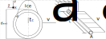

Aerodynamic linear static cantilever beam example
In this tutorial, the linear static cantilever aero example and how to address the problem using ONSAS is described. The aim of this example is to validate aerodynamic steady and uniform wind loads applied to a cantilever beam undergoing small displacements and strains. The aerodynamic force variation due to the beam deformation is not considered. Under this hypothesis a symbolic solution is available.
The beam is submitted to a uniform air wind velocity field $v_a$ at 20 degrees and atmospheric pressure along axis $z$, and because of an ice accretion on the frame cross section, lift and drag forces are induced. The lift and drag forces are characterized with their respective aerodynamic coefficients $c_d$ and $c_l$ are based on this reference. The beam has a length $L$ and a hollow cylindrical cross section with $d_{ext}$ and a thickness $b$ as it is shown in Fig.1.
The Octave script of this example is available at :
Analytic solution
The static solution is obtained within the static Euler-Bernoulli beam theory,thus the angular rotations field are:
\[\theta_z(x)= \frac{qy}{6 EI_{zz}} \left( (x-L)^3 +L^3 \right)\]
and
\[\theta_y(x)= \frac{qz}{6 EI_{yy}} \left( (x-L)^3 +L^3 \right)\]
in which $q = 1/2 \rho v_a^2 d_{ext}$, $q_z = q c_d$ and $q_y = q c_l$.
Integrating respect to x the angular rotations stated above derives to the following expressions:
\[u_y(x)= -\frac{qy}{24 EI_{zz}} \left( 6L^2x^2 - 4Lx^3 + x^4 \right)\]
and
\[u_z(x)= -\frac{qz}{24 EI_{yy}} \left( 6L^2x^2 - 4Lx^3 + x^4 \right)\]
in which $q = 1/2 \rho v_a^2 d_{ext}$, $q_z = q c_d$ and $q_y = q c_l$.
Numerical solution
The Octave script of this example is available at this url. Before defining the structs, the workspace is cleaned and the ONSAS directory is added:
close all, clear all ; addpath( genpath( [ pwd '/../../src'] ) );The material linear $E$ and shear $G$ Elastic modulus and the Poisson's ratio $\nu$ are:
E = 70e9 ; nu = 0.3 ; G = E / (2 * (1+nu)) ;Geometrical dimensions sketched in Fig 1 are:
l = 20 ; dext = .5 ; b = 1e-3 ; dint = dext - 2*b ;
A = pi * (dext^2 - dint^2) / 4 ;
J = pi * (dext^4 - dint^4) / 32 ; Iyy = J/2 ; Izz = Iyy ;the number of elements employed to discriteze the beam is:
numElements = 10 ;MEBI parameters
materials
Since the example contains only one linear Euler Bernoulli element the fields of the materials struct will have only one entry. Although, the constitutive behavior law selected is Saint-Venant-Kirchhoff:
materials.hyperElasModel = 'linearElastic' ;
materials.hyperElasParams = [ E nu ] ;elements
Two different types of elements are considered, node and frames. The nodes will be assigned in the first entry (index $1$) and the beam at the index $2$. The elemType field is then:
elements(1).elemType = 'node' ;
elements(2).elemType = 'frame' ;The node has not cross section geometry to assign (an empty array is automatically set). Since the frame element has no implemented a hollow cylindrical cross section, then a 'generic' cross-section dimensions in $y$ and $z$ directions is used. Thus the elemCrossSecParams field is:
elements(2).elemCrossSecParams{1,1} = 'generic' ;
elements(2).elemCrossSecParams{2,1} = [ A J Iyy Izz ] ;Now the parameters to include aerodynamic forces automatically on the frame element are defined. First the drag and lift cross section functions are set in concordance with the function names located at the same example folder. Thus the userDragCoef_ userLiftCoef_ momentCoefFunction fields are:
elements(2).userDragCoef = 'dragCoefFunction' ;
elements(2).userLiftCoef = 'liftCoefFunction' ;Next the elemTypeAero field contain the information of the chord vector. This vector is defined first considering the orientation of the cross section set up in lift, drag and moment experiments, and then how that cross section is located for the example. In this case the orientation of the chord vector is along $y$. In general note that the chord vector $t_{ch}$ must be given in reference (non canonical configurations). In this example the cable is oriented along $y$ so the direction will be $[0~1~0]$ as it is shown in Fig 1. Also the length of the chord is added to the norm of the chord vector, for cylindrical cantilever beams is $d_{ext}$. All this information is added into elemTypeAero field of elements struct such that:
numGaussPoints = 4 ;
elements(2).elemTypeAero = [0 dext 0 numGaussPoints];in which 4 Gauss integration points are employed to compute the aerodynamic force. This value is enough in most cases.
boundaryConds
Only one welded (6 degrees of freedom are set to zero) boundary condition (BC) is considered:
boundaryConds(1).imposDispDofs = [ 1 2 3 4 5 6 ] ;
boundaryConds(1).imposDispVals = [ 0 0 0 0 0 0 ] ;initial Conditions
Any non-homogeneous initial condition (IC) are set for this case, then an empty struct is used:
initialConds = struct() ;mesh parameters
The coordinates of the mesh nodes are given by the matrix:
mesh.nodesCoords = [ (0:(numElements))'*l/numElements zeros(numElements+1,2) ] ;The connectivity is introduced using the conecCell. Each entry of the cell contains a vector with the four indexes of the MEBI parameters, followed by the indexes of nodes that compose the element (node connectivity). For didactical purposes each element entry is commented. First the cell is initialized:
mesh.conecCell = { } ;then the first welded node is defined with material (M) zero since nodes don't have material, the first element (E) type (the first entry of the elements struct), and (B) is the first entry of the the boundaryConds struct. For (I) no non-homogeneous initial condition is considered (then zero is used) and finally the node is assigned:
mesh.conecCell{ 1, 1 } = [ 0 1 1 0 1 ] ;Next the frame elements MEBI parameters are set. The frame material is the first material of materials struct, then $1$ is assigned. The second entry of the elements struct correspond to the frame element employed, so $2$ is set. Finally no BC and no IC is required for this element, then $0$ is used. Consecutive nodes build the element so then the mesh.conecCell is:
for i=1:numElements,
mesh.conecCell{ i+1,1 } = [ 1 2 0 0 i i+1 ] ;
endanalysisSettings
First the wind velocity function name is set into userWindVel field of analysisSettings struct. This will apply a external wind loads for each element with elemTypeAero field into the elements struct. The name of the wind velocity function located on the same example path is:
analysisSettings.userWindVel = 'windVel' ;The geometrical non-linear effects are not considered in this case to compute the aerodynamic force. As consequence the wind load forces are computed on the reference configuration, and remains constant during the beam deformation. The field geometricNonLinearAero into analysisSettings struct is then set to:
analysisSettings.geometricNonLinearAero = false;since this problem is static, then a N-R method is employed. The convergence of the method is accomplish with ten equal load steps. The time variable for static cases is a load factor parameter that must be configured into the windVel.m function. A linear profile is considered for ten equal velocity load steps as:
analysisSettings.deltaT = 0.1 ;
analysisSettings.finalTime = 1 ;
analysisSettings.methodName = 'newtonRaphson' ;Next the maximum number of iterations per load(time) step, the residual force and the displacements tolerances are set to:
analysisSettings.stopTolDeltau = 1e-6 ;
analysisSettings.stopTolForces = 1e-6 ;
analysisSettings.stopTolIts = 10 ;otherParams
The name of the problem and vtk format output are selected:
otherParams.problemName = 'aeroLinStaticCantilever';
otherParams.plotsFormat = 'vtk' ;The ONSAS software is executed for the parameters above defined and the displacement solution of each load(time) step is saved as:
[matUs, ~] = ONSAS( materials, elements, boundaryConds, initialConds, mesh, analysisSettings, otherParams ) ;Verification
This example validation is ascertained comparing analytical and numerical solutions.
Symbolic solution
For such propose the angle of incidence and the wind properties are computed as:
% air density is:
rhoAire = 1.2 ;
% then characteristic dimension is extracted executing:
dimCaracteristic = norm(elements(2).elemTypeAero (1:3) ) ;
% the angle of attack is:
betaRel = acos(dot(elements(2).elemTypeAero( 1:3 ) , [0 0 1] ));
% the wind velocity is:
windVel = feval(analysisSettings.userWindVel, betaRel, analysisSettings.finalTime) ;
% the drag, lift and eventually moment coef are:
if isfield(elements(2), 'userDragCoef')
c_d = feval(elements(2).userDragCoef, betaRel);
else
c_d = 0;
end
if isfield(elements(2), 'userLiftCoef')
c_l = feval(elements(2).userLiftCoef, betaRel);
else
c_l = 0;
endThen the dynamic pressures $q_0$ defined above are expressed such that:
q = 1/2 * rhoAire * (windVel(3)^2 + windVel(2)^2) ;next the loads per unit of length are
qz = q * c_d * dimCaracteristic ; qy = q * c_l * dimCaracteristic ; then an analytic x vector to evaluate the deformed analytic solution is build as
sizeAnalyticX = 100 ;
xAnalytic = linspace(0,l,sizeAnalyticX)' ;The linear displacements symbolic solutions are:
ydefAnalytic = @(x) -qy / (24*E*Izz) * (6*l^2*x.^2 -4*l*x.^3+x.^4) ;
zdefAnalytic = @(x) qz / (24*E*Izz) * (6*l^2*x.^2 -4*l*x.^3+x.^4) ;then the angular displacements symbolic solutions are:
thetaYAnalytic = @(x) -qz / (6*E*Iyy) * (3* l^2 * x -3*l*x.^2+x.^3) ;
thetaZAnalytic = @(x) -qy / (6*E*Izz) * (3* l^2 * x -3*l*x.^2+x.^3) ;Numeric solution
The numerical solution is extracted:
xref = mesh.nodesCoords(:,1) ;
yref = mesh.nodesCoords(:,2) ;
zref = mesh.nodesCoords(:,3) ;
ydefNum = yref + matUs(3:6:end,end) ;
zdefNum = zref + matUs(5:6:end,end) ;
thetaYdefNum = matUs(4:6:end,end) ;
thetaZdefNum = matUs(6:6:end,end) ;Verification boolean
The verification boolean is computed as $||U_n - U_a || / || U_a || < 10^{-1}$
verifBoolean = norm( [ ydefNum - ydefAnalytic(xref); thetaYdefNum - thetaYAnalytic(xref); zdefNum - zdefAnalytic(xref); thetaZdefNum - thetaZAnalytic(xref) ] ) ...
< 1e-1 * norm( [ ydefAnalytic(xref); thetaYAnalytic(xref); zdefAnalytic(xref); thetaZAnalytic(xref) ] ) ; Plot verification
The plot parameters are:
lw = 5 ; ms = 8 ;
labelTitle= [' Validating solution with ' num2str(numElements) ' elements' ];
axislw = 2 ; axisFontSize = 20 ; legendFontSize = 15 ; curveFontSize = 15 ; The linear displacements verification is plotted using:
figure(1)
hold on, grid on
plot(xref , zdefNum ,'ro' , 'linewidth', lw, 'markersize' , ms) ;
plot(xAnalytic , zdefAnalytic(xAnalytic),'r-' , 'linewidth', lw, 'markersize' , ms) ;
plot(xref , ydefNum ,'bo' , 'linewidth', lw,'markersize' , ms) ;
plot(xAnalytic , ydefAnalytic(xAnalytic),'b-' , 'linewidth', lw, 'markersize' , ms) ;
legend('z_n', 'z_a', 'y_n', 'y_a', 'location', 'north')
labx=xlabel(' x (m)'); laby=ylabel('Displacements (m)');
title (labelTitle)
set(legend, 'linewidth', axislw, 'fontsize', legendFontSize ) ;
set(gca, 'linewidth', axislw, 'fontsize', curveFontSize ) ;
set(labx, 'FontSize', axisFontSize); set(laby, 'FontSize', axisFontSize) ;
print('./output/linearDisp.png')The angular displacements verification is plotted using:
figure(2)
hold on, grid on
plot(xref , rad2deg(thetaYdefNum) , 'ro' , 'linewidth', lw, 'markersize', ms) ;
plot(xAnalytic , rad2deg(thetaYAnalytic(xAnalytic)) , 'r-' , 'linewidth', lw, 'markersize', ms) ;
plot(xref , rad2deg(thetaZdefNum) , 'bo' , 'linewidth', lw, 'markersize', ms) ;
plot(xAnalytic , rad2deg(thetaZAnalytic(xAnalytic)) , 'b-' , 'linewidth', lw, 'markersize', ms) ;
legend('\theta y_n', '\theta y_a', '\theta z_n', '\theta z_a', 'location', 'eastoutside' )
labx=xlabel(' x (m)'); laby=ylabel('Angle (º)');
title (labelTitle)
set(legend, 'linewidth' , axislw, 'fontsize', legendFontSize) ;
set(gca , 'linewidth' , axislw, 'fontsize', curveFontSize ) ;
set(labx , 'FontSize' , axisFontSize); set(laby, 'FontSize', axisFontSize) ;
print('./output/angDisp.png')The 3D deformed configuration is plotted executing:
figure
hold on, grid on
plot3(xref , yref , zref ,'k-' , 'linewidth', lw + 300, 'markersize', ms+200 );
plot3(xAnalytic, ydefAnalytic(xAnalytic) , zdefAnalytic(xAnalytic),'r-' , 'linewidth', lw , 'markersize', ms );
plot3(xref , ydefNum , zdefNum ,'bo' , 'linewidth', lw , 'markersize', ms );
legend('Reference config' , 'Analytic def config' , 'Numerical def config', 'location','northEast')
labx=xlabel( 'x (m)' ) ; laby=ylabel('y(m)') ; labz=zlabel('z(m)') ;
set(legend, 'linewidth', axislw , 'fontsize' , legendFontSize ) ;
set(gca , 'linewidth', axislw , 'fontsize' , curveFontSize ) ;
set(labx , 'FontSize' , axisFontSize); set(laby, 'FontSize', axisFontSize); set(labz, 'FontSize', axisFontSize) ;
view([0.5 +0.5 -1])
print('./output/def.png','-dpng')